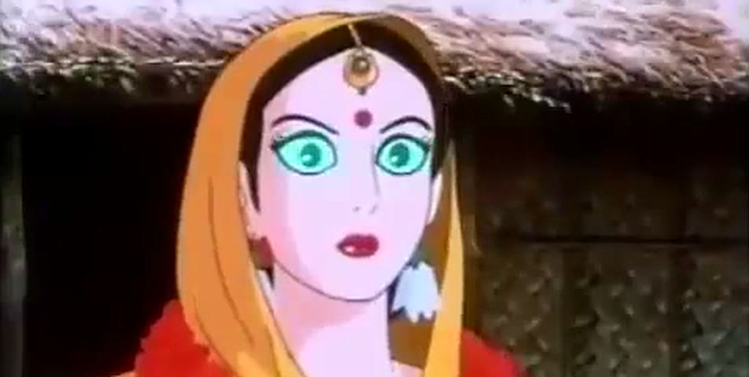

The abduction of Sita
Scroll to play. Scroll slowly and it lingers. Scroll up and it rewinds, the music running backward with you while the voices wait. Stop on a line and it finishes speaking. Tap a speech bubble to hear it again.
A fan-made, non-commercial technology demo. Footage and Hindi audio from Ramayana: The Legend of Prince Rama (1992); all rights belong to their owners, and it will be taken down on request.
Now scroll back up. Ravan turns back into the holy man and the music runs backward with you; the voices wait until you read forward again.
ScrollManga is a concept: a manga reader where your scroll is the play button. This page is a working prototype of the reader, built on one scene.
A fan-made, non-commercial technology demo. Footage and Hindi audio from Ramayana: The Legend of Prince Rama (1992); all rights belong to their owners, and it will be taken down on request.
ScrollManga concept by Prakash Upadhyay. Read the announcement.